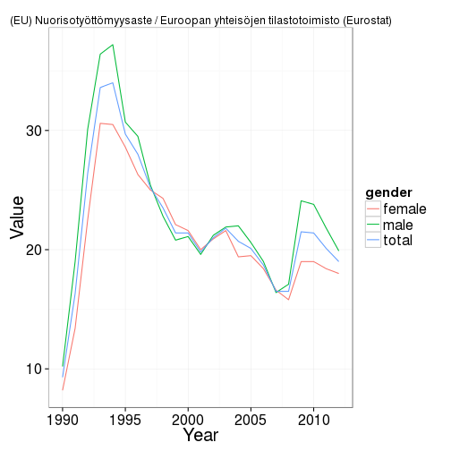
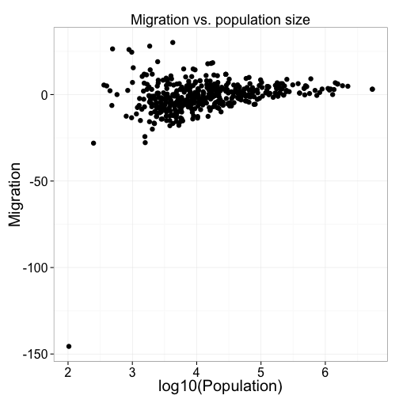

sotkanet v0.9.02
Sotkanet API R tools
This is the sotkanet R package to access data from the Sotkanet portal that provides over 2000 demographic indicators across Finland and Europe, maintained by the National Institute for Health and Welfare (THL). For more information, see Sotkanet indicator database and API description. This package is part of rOpenGov.
Installation
Release version for general users:
install.packages("sotkanet")
library(sotkanet)
Development version for developers:
install.packages("devtools")
library(devtools)
install_github("sotkanet", "ropengov")
library(sotkanet)
Listing available indicators
List available Sotkanet indicators:
library(sotkanet)
sotkanet.indicators <- SotkanetIndicators(type = "table")
head(sotkanet.indicators)
## indicator
## 1 4
## 2 5
## 3 6
## 4 7
## 5 74
## 6 127
## indicator.title.fi
## 1 Mielenterveyden häiriöihin sairaalahoitoa saaneet 0 - 17-vuotiaat / 1 000 vastaavanikäistä
## 2 Toimeentulotukea saaneet 25 - 64-vuotiaat, % vastaavanikäisestä väestöstä
## 3 Somaattisen erikoissairaanhoidon hoitopäivät 75 vuotta täyttäneillä / 1000 vastaavanikäistä
## 4 0 - 6-vuotiaat, % väestöstä
## 5 Yksinhuoltajaperheet, % lapsiperheistä
## 6 Väestö 31.12.
## indicator.organization indicator.organization.title.fi
## 1 2 Terveyden ja hyvinvoinnin laitos (THL)
## 2 2 Terveyden ja hyvinvoinnin laitos (THL)
## 3 2 Terveyden ja hyvinvoinnin laitos (THL)
## 4 3 Tilastokeskus
## 5 3 Tilastokeskus
## 6 3 Tilastokeskus
List geographical regions with available indicators:
sotkanet.regions <- SotkanetRegions(type = "table")
head(sotkanet.regions)
## region region.title.fi region.code region.category
## 1 833 Etelä-Suomen AVIn alue 1 ALUEHALLINTOVIRASTO
## 2 834 Lounais-Suomen AVIn alue 2 ALUEHALLINTOVIRASTO
## 3 835 Itä-Suomen AVIn alue 3 ALUEHALLINTOVIRASTO
## 4 836 Länsi- ja Sisä-Suomen AVIn alue 4 ALUEHALLINTOVIRASTO
## 5 837 Pohjois-Suomen AVIn alue 5 ALUEHALLINTOVIRASTO
## 6 838 Lapin AVIn alue 6 ALUEHALLINTOVIRASTO
## region.uri
## 1 http://www.yso.fi/onto/kunnat/ahv1
## 2 http://www.yso.fi/onto/kunnat/ahv2
## 3 http://www.yso.fi/onto/kunnat/ahv3
## 4 http://www.yso.fi/onto/kunnat/ahv4
## 5 http://www.yso.fi/onto/kunnat/ahv5
## 6 http://www.yso.fi/onto/kunnat/ahv6
Querying SOTKAnet indicators
Get the indicator 10013 from Finland (Suomi) for 1990-2012 (Eurostat employment statistics youth unemployment), and plot a graph:
# Get indicator data
dat <- GetDataSotkanet(indicators = 10013, years = 1990:2012, genders = c("female",
"male", "total"), region.category = "EUROOPPA", region = "Suomi")
# Investigate the first lines in the data
head(dat)
## region region.title.fi region.code region.category indicator
## 10013.1139 1022 Suomi 246 EUROOPPA 10013
## 10013.1140 1022 Suomi 246 EUROOPPA 10013
## 10013.1141 1022 Suomi 246 EUROOPPA 10013
## 10013.1142 1022 Suomi 246 EUROOPPA 10013
## 10013.1143 1022 Suomi 246 EUROOPPA 10013
## 10013.1144 1022 Suomi 246 EUROOPPA 10013
## indicator.title.fi year gender primary.value
## 10013.1139 (EU) Nuorisotyöttömyysaste 1991 total 16.3
## 10013.1140 (EU) Nuorisotyöttömyysaste 2010 male 23.8
## 10013.1141 (EU) Nuorisotyöttömyysaste 1996 male 29.5
## 10013.1142 (EU) Nuorisotyöttömyysaste 2000 total 21.4
## 10013.1143 (EU) Nuorisotyöttömyysaste 1995 total 29.7
## 10013.1144 (EU) Nuorisotyöttömyysaste 1998 male 22.8
## absolute.value indicator.organization.title.fi
## 10013.1139 NA Euroopan yhteisöjen tilastotoimisto (Eurostat)
## 10013.1140 NA Euroopan yhteisöjen tilastotoimisto (Eurostat)
## 10013.1141 NA Euroopan yhteisöjen tilastotoimisto (Eurostat)
## 10013.1142 NA Euroopan yhteisöjen tilastotoimisto (Eurostat)
## 10013.1143 NA Euroopan yhteisöjen tilastotoimisto (Eurostat)
## 10013.1144 NA Euroopan yhteisöjen tilastotoimisto (Eurostat)
# Pick indicator name
indicator.name <- as.character(unique(dat$indicator.title.fi))
indicator.source <- as.character(unique(dat$indicator.organization.title.fi))
# Visualize
library(ggplot2, quietly = TRUE)
theme_set(theme_bw(20))
p <- ggplot(dat, aes(x = year, y = primary.value, group = gender, color = gender))
p <- p + geom_line() + ggtitle(paste(indicator.name, indicator.source, sep = " / "))
p <- p + xlab("Year") + ylab("Value")
p <- p + theme(title = element_text(size = 10))
p <- p + theme(axis.title.x = element_text(size = 20))
p <- p + theme(axis.title.y = element_text(size = 20))
p <- p + theme(legend.title = element_text(size = 15))
print(p)

Effect of municipality size
Smaller municipalities have more random variation.
selected.inds <- c(127, 178)
dat <- GetDataSotkanet(indicators = selected.inds, years = 2011, genders = c("total"))
datf <- dat[, c("region.title.fi", "indicator.title.fi", "primary.value")]
dw <- reshape(datf, idvar = "region.title.fi", timevar = "indicator.title.fi",
direction = "wide")
names(dw) <- c("Municipality", "Population", "Migration")
p <- ggplot(dw, aes(x = log10(Population), y = Migration)) + geom_point(size = 3)
p <- p + ggtitle("Migration vs. population size")
p <- p + theme(title = element_text(size = 15))
p <- p + theme(axis.title.x = element_text(size = 20))
p <- p + theme(axis.title.y = element_text(size = 20))
p <- p + theme(legend.title = element_text(size = 15))
print(p)

Fetch all SOTKAnet indicators
This takes for a long time and is not recommended for regular use. Save the data on your local disk for further work.
# These indicators have problems with R routines:
probematic.indicators <- c(1575, 1743, 1826, 1861, 1882, 1924, 1952, 2000, 2001,
2033, 2050, 3386, 3443)
# Get data for all indicators
datlist <- list()
for (ind in setdiff(sotkanet.indicators$indicator, probematic.indicators)) {
datlist[[as.character(ind)]] <- GetDataSotkanet(indicators = ind, years = 1990:2013,
genders = c("female", "male", "total"))
}
# Combine tables (this may require considerable time and memory for the full
# data set)
dat <- do.call("rbind", datlist)
For further usage examples, see Louhos-blog, and takomo.
Licensing and Citations
SOTKAnet data
Cite SOTKAnet and link to http://www.sotkanet.fi. Also mention indicator provider.
Central points:
- SOTKAnet REST API is meant for non-regular data queries. Avoid regular and repeated downloads.
- SOTKAnet API can be used as the basis for other systems
- Metadata for regions and indicators are under CC-BY 3.0
- THL indicators are under CC-BY 3.0
- Indicators provided by third parties can be used only by separate agreement!
SOTKAnet R package
This work can be freely used, modified and distributed under the Two-clause FreeBSD license. Kindly cite the R package as ‘Leo Lahti, Einari Happonen, Juuso Parkkinen ja Joona Lehtomaki (2013). sotkanet R package. URL: http://www.github.com/ropengov/sotkanet’.
Session info
This vignette was created with
sessionInfo()
## R version 3.0.3 (2014-03-06)
## Platform: x86_64-apple-darwin10.8.0 (64-bit)
##
## locale:
## [1] en_US.UTF-8/en_US.UTF-8/en_US.UTF-8/C/en_US.UTF-8/en_US.UTF-8
##
## attached base packages:
## [1] methods stats graphics grDevices utils datasets base
##
## other attached packages:
## [1] sotkanet_0.9.02 RColorBrewer_1.0-5 ggplot2_0.9.3.1
## [4] XML_3.95-0.2 pxR_0.29 stringr_0.6.2
## [7] reshape_0.8.4 plyr_1.8.1 sorvi_0.4.24
## [10] helsinki_0.9.09 maptools_0.8-29 sp_1.0-14
## [13] RCurl_1.95-4.1 bitops_1.0-6 rjson_0.2.13
## [16] knitr_1.5
##
## loaded via a namespace (and not attached):
## [1] colorspace_1.2-4 dichromat_2.0-0 digest_0.6.4 evaluate_0.5.1
## [5] foreign_0.8-60 formatR_0.10 grid_3.0.3 gtable_0.1.2
## [9] labeling_0.2 lattice_0.20-27 MASS_7.3-30 munsell_0.4.2
## [13] proto_0.3-10 Rcpp_0.11.1 reshape2_1.2.2 scales_0.2.3
## [17] tools_3.0.3